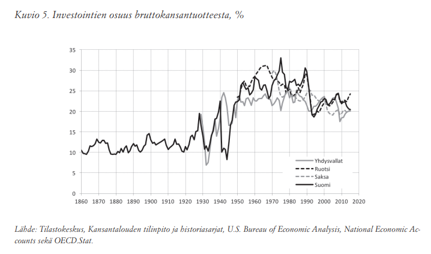

Created Monday 09 November 2020
@2020 @article @economics @GEOG_Finland @history
Pohjola, Matti (2017). Suomen talouskasvu ja sen lähteet 1860-2017. Kansantaloudellinen aikakauskirja 113(3), 266-292
Talouskasvun pysähtymisen eli pitkäaikaisen stagnaation mahdollisuuksista kts Stagnaatio-Suvanto
https://www.taloustieteellinenyhdistys.fi/wp-content/uploads/2017/09/KAK_3_2017_176x245_WEB-8-34.pdf
.\KAK_3_2017_176x245_WEB-8-34.pdf
266
- 1861-2015 sekä elintaso (bkt/asukas) että työn tuottavuus (bkt/työtunnit kasvoivat keskimäärin 2,1 %/a
- 1.4 %-yks uusista ideoista eli kokonaistuottavuuden kontribuutiosta
- 0.6 %-yks henkisen pääoman ja
- 0.1 %-yks kiinteän pääoman vaikutuksesta
- vuoden 2008 jälkeen kokonaistuottavuuden kontribuutio ollut negatiivinen -> talouskasvu pysähtynyt
- kokonaistuottavuus pudonnut vuoden 2000 tasolle, mitä ei ole rauhan oloissa ennen käynyt
- kokonaistuottavuus olisi käännettävä kasvuun
Vuonna 1860 Suomen bruttokansantuote asukasta kohden oli vain
noin puolet Saksan ja kolme neljäsosaa Ruotsin tasosta, mutta Suomen muita nopeamman kasvun ansiosta erot kurottiin umpeen vuoteen 2008 mennessä.
...
Mikäli ennusteet bruttokansantuotteen vain noin 1,5 prosentin kasvusta tulevina vuosina toteutuvat, elintason keskikasvuksi jää 0,8 prosenttia ajanjaksolla 2000–2020. Tämä olisi toiseksi hitaimman kasvun 20-vuotisjakso
267
Kasvun hidastuminen finanssikriisin jälkeen ei ole pelkästään suomalainen ilmiö, vaan se on havaittu lähes kaikissa OECD-maissa (OECD 2017; Syverson 2017). Talouskasvun pysähtymisen eli pitkäaikaisen stagnaation mahdollisuudesta onkin käyty vilkasta keskustelua taloustieteen kansainvälisillä foorumeilla jo usean vuoden ajan (Suvanto 2017). Myös rahapolitiikan päätöksentekijät ovat huoleen heränneet (Draghi 2016). Suomessa ilmiötä on tutkittu sen yhteiskunnalliseen merkitykseen nähden yllättävän vähän (Kilponen 2015; Maliranta 2016; Pohjola 2014; 2017b). Talouspolitiikan päätöksentekijöiden huomio on puolestaan keskittynyt miltei yksinomaan yritysten hintakilpailukykyä parantaviin ja julkisen talouden tasapainon palauttaviin toimiin.
268

Tarkastelujaksolla bruttokansantuote asukasta kohden kasvoi Saksassa keskimäärin 1,8, Yhdysvalloissa 1,9, Ruotsissa 2,0 ja Suomessa 2,1 prosenttia vuodessa. Erot näyttävät mitättömän pieniltä, mutta kuvion suhdelukuasteikko tuo esiin niiden merkityksen 155 vuoden aikana: elintaso kasvoi Suomessa 25-, Ruotsissa 22-, Yhdysvalloissa 18- ja Saksassa 15-kertaiseksi.
Kolme keskeistä havaintoa käy kuviosta hyvin ilmi. Ensimmäinen on se, että kaikissa maissa talouskasvu kiihtyi lyhyitä taantumatai lamajaksoja lukuun ottamatta 1800-luvulta aina 1970-luvulle saakka. Sen jälkeen kasvu on ollut selvästi hitaampaa. Erityisen heikkoa se on ollut kansainvälisen finanssikriisin jälkeen.
Toinen havainto koskee elintasoerojen supistumista. Vielä 1800-luvun puolivälissä Suomi ja Ruotsi olivat selvästi Saksaa ja Yhdysvaltoja köyhempiä mutta ovat kuroneet elintasoeroa umpeen sadan viime vuoden aikana. Ruotsi on jopa ohittanut Saksan, jonka Suomikin saavutti ainakin hetkellisesti viime vuosikymmenellä. Eurooppalaista elintasoa on meillä tavoiteltu kautta historian, mutta vasta
hiljattain siihen päästiin.
Kolmas havainto on, ettei talouskasvu ole ollut yhdessäkään maassa tasaista, vaan erityisesti lamaperiodit erottuvat selvästi. Kullakin maalla on oma historiansa. Maailmansotien tuhoisat vaikutukset näkyvät Saksan elintason romahtamisena 1910- ja 1940-luvuilla. Päinvastoin kuin joskus kuulee väitettävän, sodat eivät ole talouskasvulle hyväksi. 1930-luvun lama vaikutti kaikkein eniten Yhdysvalloissa, jonka kasvuhistoriassa se on täysin poikkeuksellinen
269
Ensimmäisen maailmansota ja sisällissota ovat Suomen talouskasvun synkintä aikaa. 2 Vuodesta 1913 vuoteen 1918 asukasta kohden mitattu bruttokansantuote putosi peräti 35 prosenttia. Sen sijaan 1930-luvun lamasta Suomi selvisi poikkeuksellisen hyvin. Rauhan ajan kriiseistä 1990-luvun lama on toistaiseksi syvin, sillä elintaso laski 11 prosenttia vuosina 1990–1993. Sitä seurasi kuitenkin erittäin ripeän kasvun kausi, joka päättyi 9 prosentin romahdukseen vuonna 2009. Sen jälkeinen ajanjakso on ollut siinä mielessä erikoinen, ettei kasvu ole elpynyt Ruotsin ja Yhdysvaltojen tavoin. Suomen pitkään jatkunut vaurastuminen näyttää pysähtyneen.
2: Väestön hyvinvoinnin kannalta nälkävuodet 1866–1868 ovat vieläkin synkempiä, sillä väkiluku supistui 6 prosenttia.
Bruttokansantuote putosi tuolloin kuitenkin vain vuonna 1867 ja elpyi heti jo seuraavana. Asukasta kohden laskettu bkt näin ollen kasvoi, mutta ei suinkaan talouskasvun ansioista. Se käynnistyi vasta nälkävuosien jälkeen.
Kasvun hidastumisen syiden jäljittämisen voi aloittaa jakamalla kuviossa 2 elintason osatekijöihinsä: bkt asukasta kohden = bkt tehtyä työtuntia kohden x tehdyt työtunnit asukasta kohden. Näistä tekijöistä ensimmäinen kuvaa työn tuottavuutta ja toinen työn määrää. Heti nähdään, että elintason jatkuva kasvu voi pitkän päälle perustua vain tuottavuuden kasvuun, sillä työn määrä ei voi rajatta kasvaa. Väkiluku ja työajan pituus asettavat sille luonnollisen ylärajan. Työn tuottavuudelle ei sen sijaan ole olemassa mitään käsitteellistä kattoa. Bruttokansantuote työtuntia kohden voi kasvaa rajatta varsinkin silloin, kun kasvu on luonteeltaan tuotteiden laadun paranemista tai niiden lukumäärän kasvua.
Vuonna 2015 elintaso oli arviolta 25-kertainen vuoteen 1860 verrattuna siksi, että työ tuottavuus oli 26-kertainen. Työtä tehtiin asukasta kohden sen sijaan hieman vähemmän. Työn määrä kohosi 1900-luvun alusta 1960-luvulle saakka, mikä näkyy kuviossa elintason tuottavuutta suurempana kasvuna. Sen jälkeen työ on vähentynyt vuotuisen työajan lyhentymisen vuoksi, jolloin elintaso on noussut yksinomaan tuottavuuden kasvusta. Viisipäiväiseen työviikkoon siirryttiin 1960-luvun lopulla ja viisiviikkoiseen vuosilomaan 1970-luvun aikana. Näin osa tuottavuuden kasvusta hyödynnettiin vapaa-ajan kasvuna.
1990-luvun laman aikana työn määrä supistui voimakkaasti, kun työttömyysaste nousi kolmesta lähes 17:ään prosenttiin. Työn tuottavuus ei sitä vastoin silloinkaan supistunut. Se on kasvanut kaiken aikaa 1800-luvulta viime vuosiin saakka sotien aiheuttamia poikkeuksia lukuun ottamatta. Suomen nykyisten talousongelmien kummallisin piirre onkin tuottavuuden kasvun pysähtyminen. Bruttokansantuote tehtyä työtuntia kohden ei ole noussut vuoden 2007 jälkeen. Näin ei ole käynyt koskaan ennen rauhan oloissa. Viime vuosina myös tehdyt työtunnit ovat vähentyneet, mikä selittää elintason (bkt/asukas) alenemisen vuoden 2011 jälkeen. Työn kysyntä on supistunut aina ennenkin taantumassa ja lamassa...
270

Tuottavuus selitetään ideoilla
Tuottavuuskasvun lakkaaminen merkitsee sen sijaan, ettei työllä aikaan saatu arvonlisäys (bkt) enää kasva, mikä on pitkällä aikavälillä suhdanneluonteista taantumaa vakavampi ongelma. Kuten myöhemmin nähdään, tuottavuus syntyy viime kädessä ideoista – siitä, että tuotannossa osataan yhdistää raaka-aineita tavalla, joka tekee niistä arvokkaampia kuin raaka-aineet itsessään ovat. Sen kasvun heikentyminen merkitsee siten arvonlisäystä kasvattavien ideoiden hiipumista, kasvun reseptin
hukkaamista.
Tuottavuuden kasvun hidastuminen ei ole pelkästään suomalainen ilmiö, vaan paljastuu useampien teollisuusmaiden tilastoista. 3 Kuvio 3 (b) tuo tämän esiin Yhdysvaltojen, Saksan ja Ruotsin osalta. Havainto on synnyttänyt edellä mainitun keskustelun talouskasvun pitkäaikaisesta hidastumisesta.
Kuvio 3 paljastaa Yhdysvaltojen muita korkeamman elintason syntyneen sekä ylivertaisesta tuottavuudesta että työn suuresta määrästä.
271
272
...
Taloustiede tekee elintason ja sen osatekijöiden suhteesta kausaalisen selittämällä, mitkä asiat vaikuttavat tuottavuuden kasvuun ja mitkä työn määrän kasvuun. Mitä suurempi osa väestöstä on töissä ja mitä pitempää työpäivää tehdään, sitä korkeampi on bruttokansantuote asukasta kohden. Työn tuottavuuden ja siten elintason kasvuvauhtiin eivät nämä tekijät kuitenkaan vaikuta. Siksi esimerkiksi työmarkkinoiden rakenteella ei ole yksiselitteistä suoraa vaikutusta talouskasvuun. On vaikea kuvitella, miten työmarkkinat synnyttäisivät yhteiskunnallisesti tai kaupallisesti käyttökelpoisia ideoita, joista talouskasvu syntyy. Paljon helpompi on ymmärtää, miten ne vaikuttavat esimerkiksi työttömyyteen. Talouspolitiikassa voi siten harjoittaa työnjakoa: teknologia- ja innovaatiopolitiikka keskittyy talouskasvun edistämiseen, työvoima- ja työllisyyspolitiikka työmarkkinoiden toimivuuden parantamiseen.
Työnteon lisääminen ei kuitenkaan välttämättä kasvata hyvinvointia, sillä vapaa-aika on hyvinvoinnin keskeinen osatekijä. Elintason kasvattaminen tapahtuisi näin hyvinvoinnin kustannuksella. Työn tuottavuuden parantaminen olisikin parempi keino, sillä sen avulla voi tavoitella kahta hyvää asiaa: korkeaa elintasoa ja runsasta vapaa-aikaa. Tuottavuuskasvun pysähtyminen on kasvavan huolen aihe siksi, että työikäinen väestömme supistuu ikääntymisen seurauksena. Elintaso voi silloin kasvaa vain tuottavuudesta.
- Työn tuottavuuden kasvun
Talousteorian mukaan työn tuottavuudelle on kolme keskeistä lähdettä: henkinen pääoma, kiinteä pääoma ja ideat eli teknologia. Henkistä pääomaa voidaan mitata työvoiman koulutustasolla ja kiinteää pääomaa tuotannossa käytettävien koneiden, laitteiden, rakenteiden, tietokoneohjelmien ja tietokantojen sekä tutkimus- ja kehityspääoman määrällä. Teknologia on sen sijaan vaikeammin arvioitavissa. Sillä tarkoitetaan nimittäin kaikkea tietoa siitä, miten tuotantopanosten avulla raaka-aineista saadaan hyödykkeitä, joita kuluttajat käyttävät tarpeidensa tyydyttämiseen.
Henkinen pääoma karttuu koulutuksen kautta, ja sen merkitys on helppo ymmärtää. Mitä enemmän osaamme, sitä paremmin teemme työmme. Koulutus voi toimia talouskasvun veturina kuitenkin vain, jos se edistää tuottavuuden kasvua. On selvää, ettei kaikki koulutus edes tähtää tähän, vaan sillä on myös muita hyvinvointia edistäviä tavoitteita.
273
Kansainvälisissä vertailuissa henkistä pääomaa mitataan tavanomaisesti työikäisen väestön keskimääräisillä koulutusvuosilla ja koulutuksen tuottoasteella, jota puolestaan arvioidaan koulutuksen palkkapreemiolla.4 Koska tässä tehtävää tarkastelua varten palkoista ei ole saatavissa tietoja riittävän pitkältä ajalta, kuviossa 4 esitetty henkisen pääoman mittari perustuu yleisesti käytettyyn laskennalliseen tuottoasteeseen (Caselli 2005).
4: Suomen osalta Rita Asplund (2000) on arvioinut, että jokainen lisävuosi koulutusta kasvattaa palkkaa noin 9 prosenttia.
Sen oletetaan
olevan 10,4 prosenttia vuotta kohden ensimmäisen neljän kouluvuoden osalta, 10,1 prosenttia seuraavalta neljältä vuodelta ja 6,8 prosenttia jokaiselta vuodelta kahdeksan jälkeen.5 Näin laskien henkinen pääoma on ollut Suomessa kaiken aikaa vertailumaita selvästi pienempi. Ruotsin tasolle on päästy vasta viime vuosina, mutta Saksasta ja Yhdysvalloista ollaan vielä selvästi jäljessä.
5: Kuviossa 4 vuosien 1950–2015 tiedot ovat Penn World Table 9.0 -tietokannasta, http://www.rug.nl/ggdc/productivity/pwt/. Siinä henkinen pääoma h on laskettu indeksinä h = exp(Ф(s)), jossa Ф(s) on koulutuksen edellä kuvattu tuottoaste, kun s mittaa keskimääräisiä koulutusvuosia. Niiden lähteenä on International Educational Attainment Database, http://www.parisschoolofeconomics.eu/en/cohendaniel/international-educational-attainment-database/. Vuosien 1860–1949 tiedot on laskettu samalla indeksikaavalla käyttäen koulutusvuosien lähteenä Barro-Lee Educational Attainment Dataset -tietokantaa, http://www.barrolee.com._____________
274
Investointien osuus bruttokansantuotteesta, kuva

Ensimmäiset kansakoulut perustettiin meillä jo 1850-luvulla, mutta käyminen oli vapaaehtoista. Oppivelvollisuuslaki säädettiin varsin myöhään vasta vuonna 1921, kun se Ruotsissa tuli voimaan 1840-luvulla ja osissa Saksaa ja Yhdysvaltoja jo tätäkin aiemmin. Kansakoulun piteneminen kuudesta kahdeksanvuotiseksi 1950-luvun lopulla sekä oppikoulun ja yliopistojen kasvanut suosio näkyivät henkisen pääoman nopeana kasvuna 1960- ja 1970-luvuilla. Yli 15-vuotiaan väestön keskimääräiset koulutusvuodet nousivat vajaasta seitsemästä kahteentoista ajanjaksolla 1960–2010.
Yllättävää vertailussa on, ettei PISA-tutkimusten perusteella koulutuksen mallimaana pidetty Suomi yllä aivan terävimpään kärkeen henkisen pääoman määrässä. Vuonna 2010 ero Saksaan ja Yhdysvaltoihin oli 1,2 koulutusvuotta. Koulutuksen määrä ei myöskään enää automaattisesti ajan myötä nouse, sillä suomalaiset nuoret eivät ole vanhempia ikäluokkia paremmin koulutettuja (Kalenius 2014). Vaarana on, että Suomi jää vielä nykyistä enemmän kilpailijamaista jälkeen.
...
Kiinteä pääoma kertyy investoinneista, jotka rahoitetaan säästämällä eli kulutuksesta pidättäytymällä.
Talouskasvun ensimmäiset, 1930- ja 1940-luvuilta peräisin olevat teoriat korostivat kiinteän pääoman merkitystä kasvun lähteenä. Niissä oletettiin kansantalouden pääomakertoimen – pääomakannan ja bruttokansantuotteen määrän suhteen – olevan vakio. Näin ol-
275
Pääomakerroin eli nettopääoma/BKT viitevuoden hinnoin
-len mitä enemmän säästetään ja investoidaan,
sitä suuremmaksi kasvaa pääomakanta ja siten
bruttokansantuote.
Kuviosta 5 näkyy, miten tätä pääomafundamentalismin oppia toteutettiin Suomessa 1950-luvulta 1980-luvun loppuun saakka. Investointien osuus bruttokansantuotteesta kaksinkertaistui ollen keskimäärin 27 prosenttia eli noin 5 prosenttiyksikköä suurempi kuin Yhdysvalloissa. Myös Ruotsissa ja Saksassa investointiasteet olivat pitkään korkeita mutta eivät kuitenkaan Suomen veroisia. Viime aikoina ne ovat olleet kaikissa maissa samaa luokkaa, hieman yli 20 prosenttia bruttokansantuotteesta.
Pääministeri Kekkosen (1952) luonnostelemaa kansallista investointiohjelmaa toteutettiin 1980-luvun lopulle saakka kanavoimalla kansantalouden säästöt teollisten investointien rahoittamiseen monin eri tavoin. Valtionomistusta käytettiin suorana keinona. Investointeja tuettiin epäsuorasti sääntelemällä rahoitusmarkkinoita, minkä seurauksena korot pysyivät matalina, reaaliset korot usein jopa negatiivisina. Palkankorotuksia hillittiin aluksi palkkoja ja hintoja suoraan sääntelemällä ja myöhemmin luomalla keskitetty, kolmikantainen sopimusjärjestelmä. Palkkamaltin vastineeksi palkansaajille luvattiin parempaa terveydenhoitoa, sosiaaliturvaa, koulutusta, lasten päivähoitoa ja muita hyvinvointiyhteiskunnan palveluja, joiden tarjonnasta päätti valtiovalta ja joita kasvava julkinen sektori tuotti (Pohjola 1996).
Investointivetoinen kasvupolitiikka toimi hyvin, kun sitä arvioidaan tuotannon pääomavaltaistumisella. Kuvion 6 mukaan pääomakerroin ei suinkaan pysynyt vakiona vaan nousi nopeasti 1950-luvulta 1980-luvulle saakka...
276
PÄÄOMAPULA EI OLE KASVUN PYSÄHTYMISEN SYY
Pääomaköyhästä Suomesta oli tullut rikas kansantalous. 1990-luvulta lähtien pääomakerroin on laskenut molemmissa maissa, mutta on Suomessa edelleen korkeampi kuin Yhdysvalloissa. Pääomapula ei siten voi olla tuottavuuden ja elintason kasvun pysähtymisen tärkein syy.
Pääomakerroin kasvoi Suomessa ja Ruotsissa 1950-luvulta 1990-alkuun saakka, mutta on sen jälkeen ollut laskussa. Suomen pääomakertoimen viime vuosien nousu johtuu bkt:n supistumisesta. Saksan pääomakerroin on kasvanut kaiken aikaa, Yhdysvaltojen pysynyt likimain vakiona.
277
Mielenkiintoista vertailussa on lisäksi se, että Suomen pääomakerroin on vieläkin suurin, vaikka investointien bkt-osuus on kuvion 5 mukaan laskenut. Ero korostuu entisestään, kun pääomakerrointa mitataan ostovoimapariteetein. Esimerkiksi vuonna 2005, joka oli suhdanteiden osalta suhteellisen neutraali vuosi ja siksi vertailuun sopiva, Suomen pääomakerroin oli kuvion 7 mukaan 15 prosenttia Ruotsia suurempi kansallisin hinnoin laskien mutta peräti 25 prosenttia suurempi ostovoimapariteeteilla arvioiden (Penn World Table 9.0).
Kansantalouttamme vaivaa siten vieläkin eräänlainen, aiemmilta vuosikymmeniltä tuttu, pääoman tehottomuus (Pohjola 1996). Elintasomme nimittäin laskee, vaikka pääomakerroin on selvästi vertailumaiden suurin. Kasvuongelmien syiden on oltava jossakin muualla kuin määrältään vähäisissä investoinneissa. Niitä voi jäljittää talouskasvun uudempien teorioiden avulla.
Edellä mainitut ensimmäiset teoriat sivuuttivat nimittäin pääoman alenevan rajatuottavuuden lain. Sen mukaan pääomakannan kasvattaminen kyllä lisää tuotantoa mutta vähenevää vauhtia ja ennen pitkää vaikutus pysähtyy kokonaan. Näin ollen investointien kiihdyttäminen on järkevää vain silloin, kun pääoma on niukka tuotannontekijä. Jatkuvaa kasvua ei
tällä tavoin pystytä luomaan.
Talouskasvun nykyteoria sai alkunsa 1950-luvun lopulla Robert M. Solow’n oivalluksesta laajentaa teoriaa tällä tavoin. Hän osoitti, että säästämisasteen kasvattaminen kyllä kiihdyttää talouskasvua tilapäisesti ja että paljon säästävästä kansantaloudesta tulee rikas pääoman määrällä mitaten mutta että jatkuva kasvu voi syntyä vain ideoista eli teknologian kehityksestä.
Maatalousesimerkki
Ajatellaan käytännön esimerkkinä vaikkapa maataloutta, jossa käytetään hevosia tuotannontekijöinä. Niiden määrän kasvattaminen lisää tuotantoa ja työn tuottavuutta vain tiettyyn rajaan saakka, jolloin hevosiin investoimisen tarve lopulta ehtyy. Kun traktori uutena keksintönä korvaa hevosen, investoimisen tarve lisääntyy ja automaation myötä nousevat sekä työn tuottavuus että maataloustuotanto. Näin teknologian kehityksen tuottama uusi innovaatio lisää sekä investointeja että talouskasvua. Investoinnit eivät siten itsessään luo talouskasvua, vaan ne ovat seurausta teknologian kehityksestä. Investointeja tukemalla ei siksi voi myöskään talouskasvua loputtomiin kiihdyttää.
Hevosia oli Suomessa noin 300 000 kappaletta silloin, kun ensimmäinen polttomoottorilla toimiva traktori tuotiin maahan vuonna 1908. Traktorien lukumäärä kasvoi ensin hitaasti, mutta ylitti hevosten määrän 1960-luvulla. Nyt traktoreita on 410 000 ja hevosia 74 000, joista maatiloilla enää 22 000. Arvattavasti nekin ovat muussa käytössä kuin maataloustuotannossa. Hevosten valtakaudella maa- ja metsätalouden työn tuottavuus kaksinkertaistui, traktoreiden valtakaudella se on kasvanut kahdeksankertaiseksi. (Lähteet: Hippos ry, Tilastokeskuksen Moottoriajoneuvorekisteri ja Kansantalouden tilipidon historiasarjat.)
278
Investoinnit henkisiin omaisuustuotteisiin
TEKNOLOGIAN MÄÄRITELMÄ
Teknologia on tietoa siitä, miten tuotantopanosten avulla raaka-aineista saadaan hyödykkeitä, joita kuluttajat käyttävät tarpeidensa tyydyttämiseen. Teknologialla ei näin ollen tarkoiteta pelkästään tavaroiden valmistamiseen ja palvelujen tuottamiseen liittyvää tietoa, vaan se kattaa koko arvoketjun raaka-aineista lopputuotteiden kulutukseen. Esimerkiksi johtamismenetelmät ovat teknologiaa. Teknologian kehittyminen tarkoittaa sitä, että samoista määristä tuotannontekijöitä saadaan joko enemmän tai entistä parempilaatuisia lopputuotteita tai jopa kokonaan uusia tuotteita. Uusimmissa kasvuteorioissa teknologia-termi onkin korvattu ideat-sanalla, joka kuvaa merkitystä paremmin.
Sekä ideat että henkinen pääoma ovat tietoa. Niiden ero on se, että henkinen pääoma on sitoutunut ihmiseen mutta ideat ovat tietovaranto, joka on kaikkien käytettävissä. Ihmisen kuollessa hänen henkinen pääomansa häviää eikä siirry muille. Jokaisen on itse hankittava koulutuksensa. Ideat eli teknologinen tietämys, kuten ruokaresepti tai vaikkapa Pythagoraan lause, siirtyy sukupolvelta toiselle ja yrityksestä tai maasta toiseen. Kerran keksittyä ei tarvitse keksiä uudelleen. Tästä syystä teknologiaa voi pitää koulutusta tärkeämpänä kasvun lähteenä. Uusia ideoita on tosin vaikea kehittää tai omaksua ilman riittävää koulutusta, joten ideat ja koulutus myös täydentävät toisiaan.
Empiirisen kasvututkimuksen ongelmana on, ettei ideoiden määrälle ole hyvää mittaria. Niiden vaikutusta talouskasvuun joudutaan siksi arvioimaan epäsuorasti. Tämä tehdään niin, että havaitusta työn tuottavuuden kasvusta vähennetään henkisen ja kiinteän pääoman estimoidut kasvuvaikutukset. Jäännöstä kutsutaan kokonaistuottavuudeksi, ja sen ajatellaan ainakin pitkällä aikavälillä syntyvän ideoista. HOX TAASKAAN EI ENERGIASTA TAI AINEESTA MITÄÄN...
279
Solow’n kasvuteoriassa ideoiden kehitystä pidetään eksogeenisena, talouden ulkopuolella määräytyvänä. Sitä tulee kuin mannaa taivaasta. Moderneissa, endogeenisen talouskasvun teorioissa tämä epärealistinen oletus on korvattu ideoiden tuotantofunktiolla. Mitä enemmän kansantalous käyttää voimavarojaan – lähinnä henkistä pääomaa – uusien ideoiden kehittämiseen ja omaksumiseen, sitä nopeammin kasvaa ideoiden määrä ja siten aikanaan myös työn tuottavuus.
1990-luvulla syntynyt endogeenisen kasvun teoria on jo pitkälle kehittynyt, mutta soveltamisessa on vielä paljon ratkaisemattomia ongelmia. Kovin vähän nimittäin tiedetään ideoiden tuotantofunktion ominaisuuksista, muodosta puhumattakaan (Bloom ym. 2017). Selvää käsitystä ei tiedeyhteisössä ole myöskään siitä, miten panostuksia ideoiden kehittämiseen tulisi mitata. Tutkimus- ja kehitysmenojen pääomittaminen ja kansantalouden tilinpitoon liittäminen vuonna 2014 on parantanut tilannetta, mutta pitkän ajan analyysiin tai laajaan kansainväliseen vertailuun ei tietoja ole tarjolla.
Ideat ovat aineellista pääomaa tärkeämpiä kasvun lähteitä kahdesta syystä. Ensimmäinen on se, että ideat voi antaa muille ja silti pitää itse. HOX EI VOI JOS IDEAA EI VOI TOTEUTTAA. Toinen syy on, että niitä voi käyttää äärettömän monta kertaa. Tutkimuksen ja kehittämisen lisäksi myös muilla henkisillä omaisuustuotteilla on samat ominaisuudet. Kansantalouden tilinpidossa näitä ovat tietokoneohjelmistot ja tietokannat sekä viihteen, kirjallisuuden ja taiteen alkuperäisteokset.
Tutkimus- ja kehitysinvestointien sijasta investoinnit kaikkiin henkisiin omaisuustuotteisiin antavat tarkemman kuvan ideoiden merkityksestä kansantalouden bruttopääomanmuodostuksessa. Tosin valtaosa näistä – noin kaksi kolmasosaa – on tutkimus- ja kehitysinvestointeja. Henkisiin omaisuustuotteisiin tehtyjen investointien osuus bruttokansantuotteesta on kasvanut kaiken aikaa, Yhdysvalloissa 1930-luvulta saakka (kuvio 8). Ruotsissa osuus on suurin, Saksassa pienin.
282
Työn tuottavuuden (bkt/työtunnit) kumulatiivinen kasvu ja osatekijöiden kontribuutio 1860-2015
283
Kokonaistuottavuus – talouskasvun tärkein lähde – on supistunut itsenäisyyden aikana merkittävästi vain 1910-luvun lopussa, 1930- ja 1940-lukujen taitteessa ja vuoden 2007 jälkeen. Muina vuosina se on ylläpitänyt työn tuottavuuden ja sen myötä elintason kasvua. Kaksi ensimmäistä pudotusta selittyvät sotien vaikutuksilla mutta viimeiselle ei ole mitään ulkoista syytä.
Kokonaistuottavuuden kasvun hidastuminen koskee myös monia muita maita Yhdysvallat mukaan lukien (Baily ja Montalbano 2016). Näyttää siltä, kuin teknologian kehitys olisi hidastunut tai ainakin sen vaikutus talouskasvuun heikentynyt. Mitään selvää selitystä tällä kokonaistuottavuuden mysteeriksikin jo nimetylle ilmiölle (Oulton 2016) ei tieteessämme vielä ole. Bailyn ja Montalbanon (2016) katsaus on hyvä yhteenveto tehdystä tutkimuksesta.
REFS:Oulton16
2016:ProductivityTotalFactor-Oulton
REFS:Baily16
2016:ProductivityGrowthUSA-Baily
285
Ideat kasvun lähteenä
Talouskasvun modernin teorian vastaus on yksinkertainen: ideoiden kasvuvaikutuksen vahvistamiseksi olisi investoitava niiden lähteisiin eli tutkimukseen ja kehittämiseen. Teoria liittää kansantalouden tuotantofunktioon Y = A F(K, hL) ideoiden tuotantofunktion ΔA/A = G(S). Bruttokansantuotteen määrä Y on sitä suurempi, mitä enemmän kansantaloudessa on ideoita
286
A, kiinteää pääomaa K, henkistä pääomaa h ja mitä suurempi on työn määrä L. Ideoiden kasvuvauhti ΔA/A on puolestaan sitä nopeampaa mitä enemmän on tutkimusta ja kehittämistä tekeviä sekä muita henkisiä omaisuustuotteita luovia ihmisiä S (= scientists).
Kuten edellä jo tuli ilmi, ideoita voidaan jakaa, eivätkä ne kulu käytössä. Niitä voidaan kehittää itse tai omaksua muilta. Meillä käytettävissä olevien uusien ideoiden määrään vaikuttaa siten myös se, kuinka paljon niiden kehittämiseen käytetään voimavaroja muissa maissa. Taloushistoriasta tiedämme teknologian tuonnin olleen merkittävä tekijä Suomen teollistumisessa ja vaurastumisessa.
Ideoiden tuotantofunktion G muodosta tiedetään vielä kovin vähän. Bloom ym. (2017) [2020] argumentoivat tuoreessa tutkimuksessaan vakuuttavasti, että kokonaistuottavuus vähenee ideoiden tuotannossa. Tietynsuuruisen kasvuvauhdin ylläpitäminen vaatii siksi jatkuvasti kasvavia panostuksia tutkimukseen ja kehittämiseen. Uusia ideoita on entistä vaikeampi löytää
REFS:Bloom20
Tämä pätee Suomessakin. Henkisiin omaisuustuotteisiin tehtyjen investointien volyymi on nykyään kaksinkertainen 1970-luvun puoliväliin verrattuna, mutta kokonaistuottavuuden kasvuvauhti on pudonnut 2,5 prosentista nollaan. Nyt kuitenkin sekä yksityiset että julkiset tutkimus- ja kehitysinvestoinnit ovat kääntyneet laskuun ja supistuneet usean vuoden ajan (kuvio 8). Tämä ei välttämättä johda teknologian kehityksen ja talouskasvun hidastumiseen, jos muut maat kasvattavat investointejaan ja jos me niistä hyödymme. Kasvun tulevaisuus riippuu siten omien toimiemme lisäksi siitä, miten uusia ideoita syntyy muualla.
"tulevaisuus näyttää hyvältä"
7 Kasvun tulevaisuus
Elintason ja hyvinvoinnin kasvun tulevaisuus näyttää hyvältä, kun sitä tarkastellaan koko maailman näkökulmasta. Monet aiemmin köyhät maat – Kiina etunenässä – ovat saavuttamassa jo rikkaiden maiden elintason. Kerran liikkeelle lähdettyään talouskasvu on tehokas elintasoerojen tasaaja, kuten omasta taloushistoriasta tiedämme (kuvio 1). Elintasoerojen havaittu supistuminen sai Lucasin (2000) vuosituhannen vaihteessa spekuloimaan maailman olevan uuden aikakauden kynnyksellä – sellaisen, jossa kaikki kansakunnat ovat yhtä rikkaita.
Ennusteet ovat sen jälkeen muuttuneet pessimistisemmiksi, kun rikkaiden maiden kasvu on hidastunut finanssikriisin jälkeen. Kriiseistä on kuitenkin aina ennen selvitty, minkä oma historiammekin todistaa. Vuosien 1918 ja 1919 romahduksen jälkeen kasvu oli ripeää 1920- ja 1930-luvuilla. Niin oli myös toisen maailmansodan jälkeen 1950-luvulta 1970-luvulle. 1990-luvun lamaa seurasi nopean kasvun vuoteen 2008 päättynyt ajanjakso.
287
Japanin kasvuvauhdin hidastuminen 1980-luvun jälkeen osoittaa kuitenkin, ettei paluu nopean kasvun trendille tapahdu automaattisesti. Japanin ostovoimakorjattu bruttokansantuote asukasta kohden oli 85 prosenttia Yhdysvaltojen tasosta 25 vuotta sitten, nyt vain 72 prosenttia.
Liitteessä esitetyn talouskasvun perusmallin mukaan työn tuottavuuden tulevaa kasvuvauhtia voi ennakoida henkisen pääoman ja kokonaistuottavuuden kontribuutioiden yhteenlasketun vaikutuksen kautta. Kiinteällä pääomalla ei ole itsenäistä vaikutusta pitkällä ajalla, sillä se sopeutuu teknologian kehitykseen.
...
Robotiikan on tosin argumentoitu olevan ensimmäinen teknologia ihmiskunnan historiassa, joka saattaa pelkästään vähentää
työtä (Acemoglu ja Restrepo 2017).
Käsitykset uusien ideoiden tulevasta kasvuvauhdista eroavat toisistaan varsin paljon. Eräät taloustieteilijät (mm. Gordon 2016) näkevät, etteivät nykyiset ja tulevat innovaatiot – esimerkiksi ICT ja digitalisaatio – ole vaikutuksiltaan niiden veroisia, jotka käynnistivät toisen teollisen vallankumouksen runsaat 100 vuotta sitten. Edellä esitelty kokonaistuottavuuden heikkeneminen ideoiden tuotannossa tukee tätä hypoteesia.
Toiset (mm. Brynjolfsson ja MacAfee 2014) uskovat, että ICT, digitalisaatio ja tekoäly toimivat samalla tavoin yleiskäyttöisinä teknologioina kuin sähkövoima aikanaan mutta että tuottavuusvaikutuksen realisoituminen vaatii täydentäviä innovaatioita, esimerkiksi työtapojen ja organisaatioiden muutoksia. Koska nämä vievät oman aikansa, tuottavuuden tuleva kiihtyminen vain viivästyy mutta toteutuu aikanaan. Ideoiden kokonaistuottavuuden väheneminen voidaan puolestaan kumota riittävin panostuksin tieteeseen, tutkimukseen ja kehittämiseen.
HOX EIKÄ KUKAAN PUHU MATERIASTA
288
289
Pienellä kansantaloudella on mielestäni vain yksi ainoa talouskasvun strategia: hyödyntää maailmantalouden muutosvoimat. Sen toteuttaminen ei onnistu ilman jatkuvaa koulutusta, tutkimusta ja kehittämistä.
REFS:Kuisma91
Sata vuotta sitten muutosvoimina olivat industrialismi ja nationalismi (Kuisma 1991). Vaurastumisen idea – resepti – oli yksinkertainen: hiotaan puu paperiksi ja jalostetaan malmit metalleiksi sähköä käyttövoimana hyödyntäen. Jalostusarvon nousun myötä työn tuottavuus, palkat ja elintaso kasvoivat. Teolliset yritykset – erityisesti metsä- ja metalliteollisuuden yritykset – kulkivat kehityksen kärjessä. Nykymaailma on erilainen. Digitalisaatio ja globalisaatio ovat uudet muutosvoimat...
Elämme talouden murrosta, jollaisia koetaan keskimäärin vain kerran sadassa vuodessa. Maailmantalouden uudet muutosvoimat
olisi osattava käyttää tälläkin kertaa hyväksi. Tulevaisuudelle tarvittaisiin nykyistä rohkeampi kansallinen visio.
Talouspolitiikan keskeisimmäksi tavoitteeksi on nimittäin asetettu teollisuuden kilpailukyvyn kohentaminen työvoimakustannuksia alentamalla ja julkisen talouden tasapainon palauttaminen menoja supistamalla. Näillä toimin vakautetaan suhdannekehitystä, mutta ei välttämättä mitenkään edistetä talouskasvua. Kun myös julkisia tutkimus- ja kehitysmenoja leikataan ja koulutuksesta supistetaan, kasvun lähteitä jopa heikennetään.
{kind=link}
{kind=link}
{kind=link}
{kind=link}
{kind=link}
{kind=link}
{kind=link}